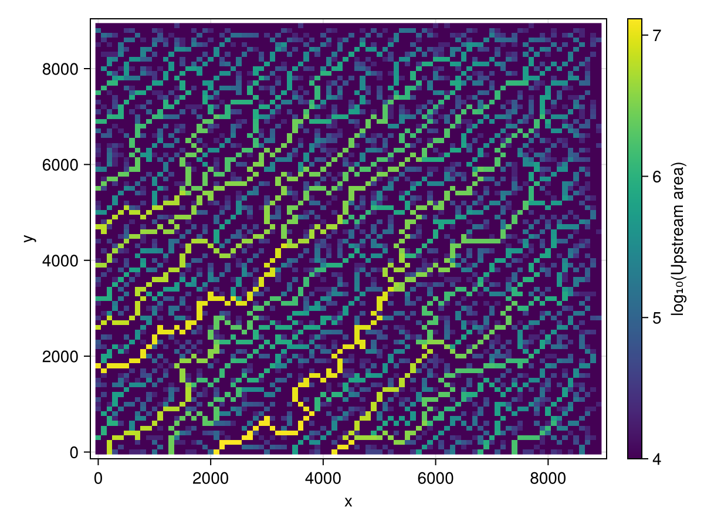
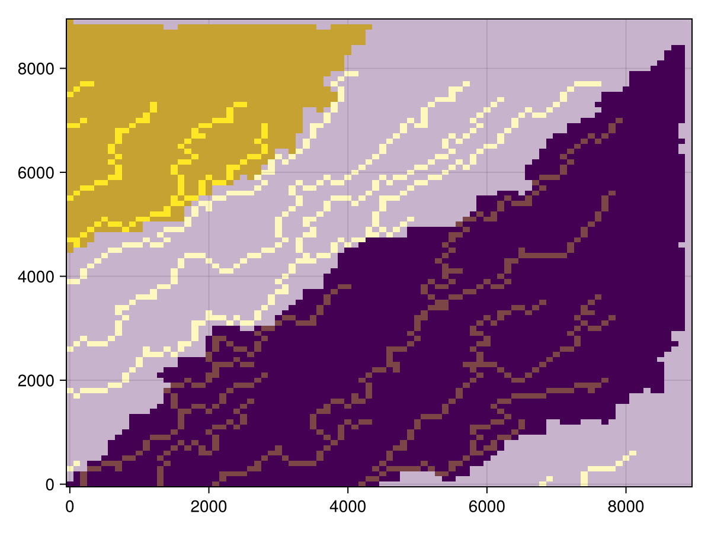

Subglacially
WhereTheWaterFlows.Subglacially extends core routing for subglacial settings.
Compared with plain waterflows, it provides:
- routing based on Shreve (1972) hydraulic potential,
- pressure-melting/supercooling-aware flow deflection,
- lake-depth diagnostics,
- optional per-sink flux aggregation.
This module is aimed at routing water at the ice-bed interface below glaciers and ice sheets using the Shreve hydraulic potential (Shreve, 1972). Optionally, pressure-melting-point effects are accounted for (Röthlisberger, 1972).
Recent applications using this workflow include Malczyk et al. (2023), Delaney et al. (2023), Ogier et al. (2025), Horgan et al. (2025), Washam et al. (2026) and Ogier et al. (2026).
Hydraulic potential
The Shreve hydraulic potential φ used for routing is
φ = f · H · (ρ_w/ρ_w) + (z_s − H)where H is ice thickness, z_s is surface elevation, f is the flotation fraction, and ρ_i, ρ_w are ice and water density (units in m water level). At full flotation (f = 1) this is the standard Shreve potential. The bed elevation is zb = zs − H.
Water flows down the gradient of φ, not down the gradient of the bed.
Minimal run
using WhereTheWaterFlows, CairoMakie
using Random; Random.seed!(42)
const WWFS = WhereTheWaterFlows.Subglacially
n = 90
dx = 100.0
x = y = range(0, step=dx, length=n)
surfdem = 1200 .+ 0.015.*x .+ 0.015.*y' .+ 4 .* randn(n, n)
beddem = 950 .+ 0.01.*x .+ 0.01.*y' .- 100 .* exp.(-((x .- x[end]/2).^2 .+ (y' .- y[end]/2).^2) ./ (2 * 4000.0^2))
surfdem = max.(surfdem, beddem .+ 10.0)
out = WWFS.waterflows_subglacial(surfdem, beddem, dx; gamma=WWFS.GAMMA)
plt_area(x, y, out.routing.area.total)
Set gamma=0 to disable deflection/supercooling effects and recover Shreve-potential-only behaviour.
Output structure
waterflows_subglacial returns a nested named tuple with four top-level keys:
routing
All fields from the core waterflows call, plus phi (the hydraulic potential used for routing):
area: named tuple with four routed fields:total: total accumulated water flux (source + melt; in m³/s whensourceis in m/s)extra: accumulated flux from melt only (dissipation + pressure melting)dissipation_melt_rate: local melt rate from energy dissipation [m/s]pressure_melt_rate: local melt rate from pressure-melting-point effects [m/s]
slen, dir, nout, nin, sinks, pits, c, bnds: same aswaterflows(see Tutorial)phi: the Shreve hydraulic potential field
pressmelt
Diagnostics from the flow-deflection step:
sc_locs: Boolean mask of cells where supercooling occurs (outflow edge is supercooled)kappas: deflection angle in units of π/4 at each celldir_og: flow directions before deflection
lakes
Lake-depth diagnostics derived from fill_dem applied to the hydraulic potential:
depth_fixed_surface: lake depth assuming the ice surface is fixed [m water equivalent]depth_free_surface: lake depth assuming the ice surface adjusts freely [m]
sink_catchments
Only populated when ctch_sinks is non-empty:
masks: vector ofBitMatrix, one per sink setfluxes: named tuple(total, dissipation, pressmelt), each a vector of total flux values (m³/s) for the corresponding sink set
Key controls
| Argument / Keyword | Default | Meaning |
|---|---|---|
surfdem, beddem | — | Surface and bed elevation arrays (same size) |
dx | — | Grid spacing in metres (must be equal in x and y) |
floatfrac | 1 | Flotation fraction (scalar or array); 1 = full flotation |
source | ones(size(surfdem)) | Meltwater input per unit area [m/s] |
mask | all true | Active routing mask; false cells are set to NaN in φ |
gamma | GAMMA (≈−0.31) | Röthlisberger constant controlling deflection strength; set to 0 to disable |
avoid_sc | false | If true, supercooled cells become barriers (mass is lost there) |
ctch_sinks | [] | Sink-area sets for per-catchment flux diagnostics |
rhow, rhoi | 1000, 910 | Water and ice densities [kg m⁻³] |
drain_pits, bnd_as_sink, nan_as_sink | true | Inherited from core routing |
Defining outlet groups (ctch_sinks)
ctch_sinks groups routing sinks for per-outlet masks and flux aggregation. Each group must contain only actual routing cells. Typically these would be cells from out.routing.sinks but also interior cells can be used (e.g. for the catchment of a subglacial lake). Using arbitrary boundary indices can silently include inactive cells (for example off-glacier boundary cells that are barriers), which can produce zero-flux groups and misleading accounting.
The robust pattern for partitioning sinks at the routing boundary is a two-step workflow:
- Run one deterministic routing pass without
ctch_sinksto discover active sinks. - Partition
out.routing.sinksinto outlet groups. - Re-run routing (or Monte Carlo) with this partition as
ctch_sinks.
This examples, continuing from above, shows the workflow:
# Step 1: discover active sinks
out_first = WWFS.waterflows_subglacial(surfdem, beddem, dx; gamma=WWFS.GAMMA)
all_sinks = out_first.routing.sinks
# Step 2: partition sinks by position (simple example)
nx, ny = size(surfdem)
south_sinks = filter(ci -> ci[1] <= nx ÷ 2 && ci[2] == 1, all_sinks)
east_sinks = filter(ci -> ci[1] == 1 && ci[2] > ny ÷ 2, all_sinks)
ctch_sinks = [south_sinks, east_sinks]
# Optional check for an exhaustive non-overlapping partition (actually not the case here)
#@assert length(all_sinks) == sum(length.(ctch_sinks))
# Step 3: run again with outlet groups
out = WWFS.waterflows_subglacial(surfdem, beddem, dx;
gamma=WWFS.GAMMA,
ctch_sinks=ctch_sinks)
# plot the two catchments with main drainage pathways overlain
c = out.sink_catchments.masks[2].*2.0 .+ out.sink_catchments.masks[1]; c[c.==0].=NaN
f = heatmap(x, y, c)
heatmap!(x, y, out.routing.area.total.>1e6, alpha=0.3, transparency=true)
f
For exhaustive outlet partitions, groups are typically non-overlapping. The API also allows overlapping groups if that is useful for a specific application.
For real datasets, WWFS.catchment_sinks is usually the most practical approach: it derives sink-group partitions from outlet polygons.
Suggested examples
examples/wwfs-simple.jl: quick introexamples/subglacially/valley-glacier.jl: valley setupexamples/subglacially/ice-sheet-margin-shmip.jl: SHMIP-like geometryexamples/subglacially/ice-cap-full-workflow.jl: full deterministic + stochastic workflow with two-stepctch_sinkspartitioning and per-outlet flux statistics
You can run those from the examples environment with, e.g.:
include("subglacially/valley-glacier.jl")
include("subglacially/ice-cap-full-workflow.jl")Physical notes
- Inputs are expected on a regular Cartesian grid with scalar
dx. - Routing assumes local D8 connectivity.
- Supercooling diagnostics (
sc_locs) are a model approximation and should be interpreted with care. - Negative
dissipation_melt_ratecan occur where the breach algorithm routes water uphill out of a filled depression; the corresponding melt going into the depression balances this.
See also: Tutorial, Examples, and API Reference.